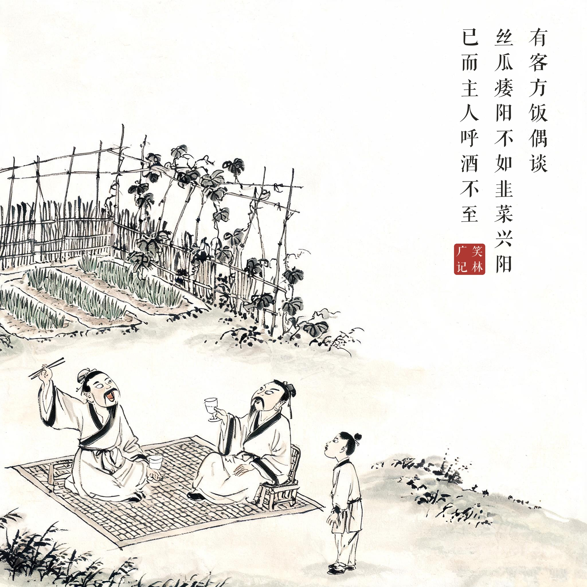
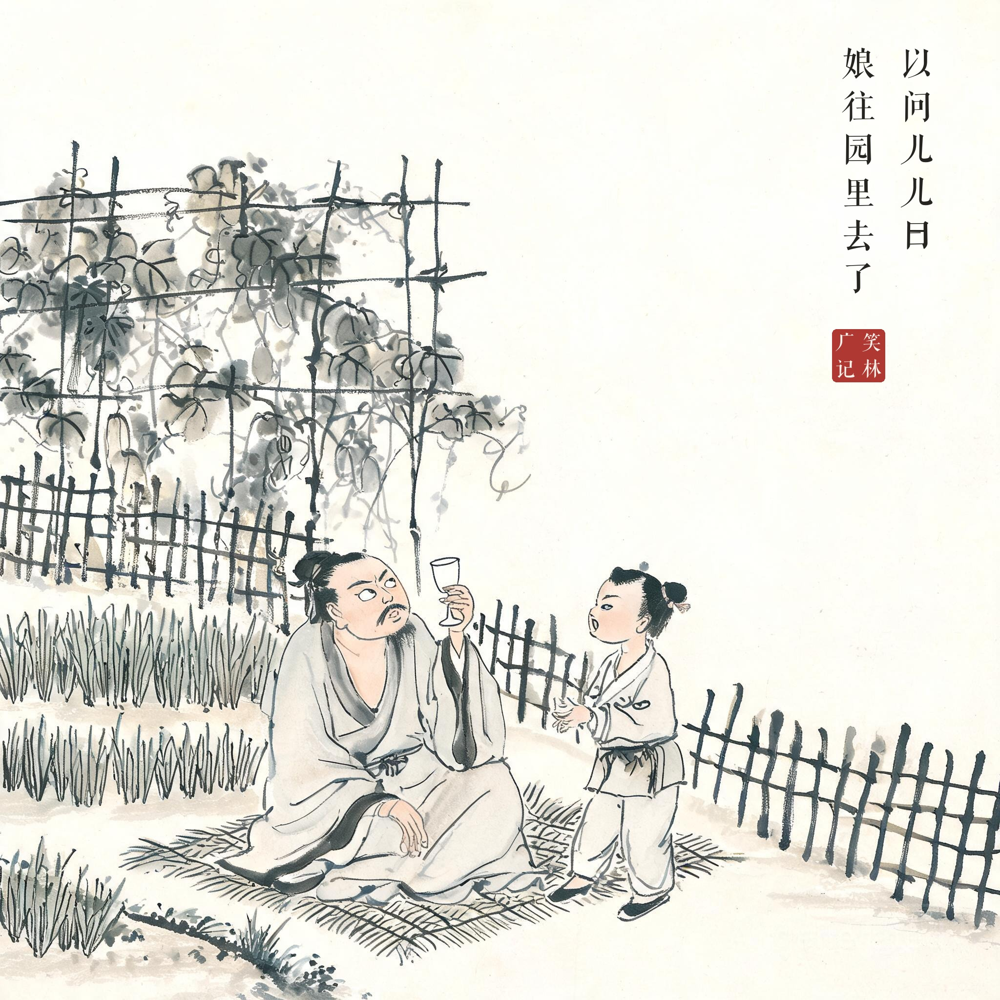
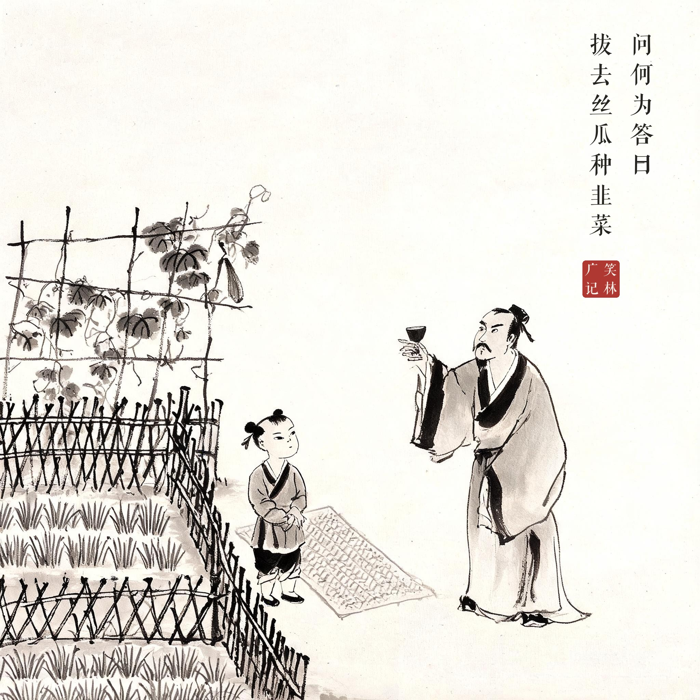

《笑林广记 · 闺风部》（[清]游戏主人纂集）
有客方饭，偶谈"丝瓜痿阳，不如韭菜兴阳"。已而主人呼酒不至，以问儿，儿曰："娘往园里去了。"问："何为？"答曰："拔去丝瓜种韭菜。"
客人正在吃饭，闲聊中说起"丝瓜败阳不如韭菜壮阳"。不一会儿主人喊酒没人送来，问小童怎么回事，小童说："娘去园子里了。"问干什么去了，答："拔掉丝瓜种韭菜呢。"
席间的一句闲聊，让整个后园的作物计划连夜调整——"拔去丝瓜种韭菜"，农事跟着餐桌话题走。